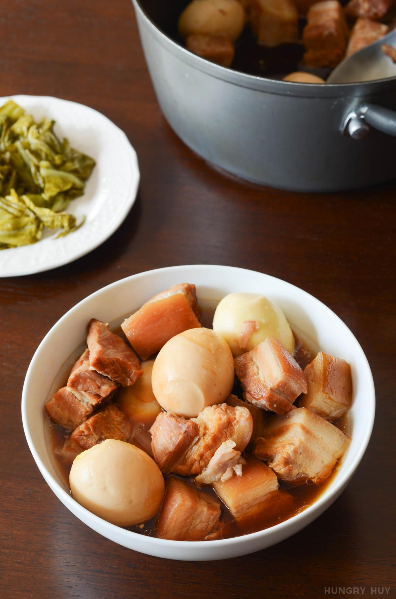

Thịt Kho Recipe

Description
Thịt kho is a comforting meal made of braised pork
belly and eggs in a caramel sauce. I have memories of eating it over rice. It is sweet,
salty, and savory. Perfect for winter meals.
Ingredients
- 2 lb pork belly
- water
- 3 tbsp fish sauce
- 2 tsp salt
- 4 tbsp sugar
- 1/2 cup warm water
- silicone spatula
- 8 hard-boiled eggs
- 1 yellow onion - chopped into eight
Instructions
Nước Màu (Caramel Sauce)
First, we need to make the caramel sauce that is used to color the
thịt kho.
- To a saucepan on medium heat, add the sugar
- Stir the sugar continuously with the silicone spatula
- Continue to stir as the sugar melts and starts to turn dark
- Adjust the heat as needed and when the caramel begins to smoke,
add the warm water slowly to the sugar and stir unti all of the
sugar dissolves
- Set aside for later
Thịt Kho
Now we can begin cooking the thịt kho
- Cut the pork belly into 1 inch cubes
- Bring water in a pot to boil - enough to submerge the pork
- Add the pork for 2 minutes, then drain and rinse the pork
- Add the fish sauce, salt, and fresh water to cover the pork and
bring to a boil
- Once the pot is boiling, reduce the heat and allow the pot to
simmer for 1.5 hours
- For the first 40 minutes of simmering, keep the pot covered,
stirring occasionally
- After 40 minutes, remove the cover to let the contents reduce
- After a total of 1.5 hours simmering, add the nước màu to the
pot
- Add the hard-boiled eggs and onion
- Continue to reduce to about 1/3 the starting volume
- Check and season with salt or fish sauce or add water to taste
Home